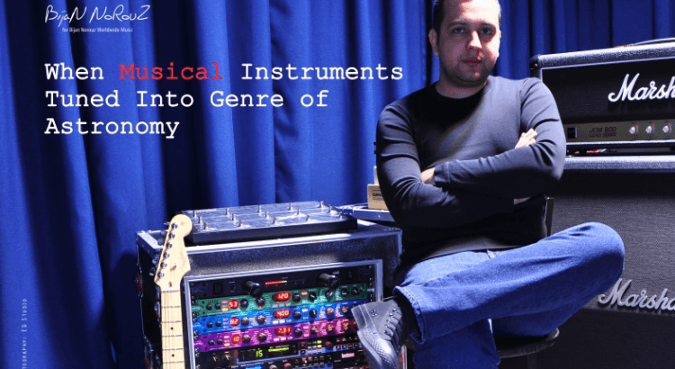
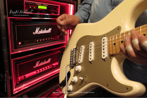

When Musical Instruments Tuned Into Genre of Astronomy
It is reasonable to say that from the beginning of human creation, there were music, the sound of birds, the sound of water, the sound of wind when it blows through the trees, the sound of rain and all those inspired people who repeated the sounds of nature as a language to refine their souls.
Music has changed our minds and our imagination, and it has become a reason for the development of science music, therefore we can define a composer, as an author of music, because the composer, who is fully surrounded by the science of music, would be able to write his ideas in the alphabet of music.
With this attitude, the BijanNorouz Worldwide Music has moved forward into the realm of science music, by trying to introduce astronomical phenomena via using the seven musical letters.By producing musical works in the fields of Film, Science Documentaries, Astronomy, the Universe, Physics and Quantum, BijanNorouz’s team have been working passionately to combine music and science together.
BijanNorouz, has studied simultaneously in the fields of Physics, sound engineering and music.He believes that this sort of music can change our life.It can help us to think and produce new ideas for this modern word.
According to BijanNorouz, music plays a crucial role in our life and it is essential for all composers to have a good influence on society, which could result in having a healthy mind.
Music and Science
'Music is a universal language,' BijanNorouz said.'There are other musicians in the world who work in the field of producing astronomical music, although there is not such a purposeful activity to produce astronomical albums every year.We consider defined targets in our project, in a way to provide specialized topics in the genre of music every year.Therefore, we can change our musical platform based on the defined topics.We are trying to consider music as a technology and science.'
Music is A Culture
BijanNorouz explained about the production of astronomical films and translating scientific books in the field of artificial intelligence along with music related to artificial intelligence.
He added that along with being a music band, we have a technical and engineering research group, and some other friends, who have led us to cooperate with space centers in other countries.
Cooperation with Universal Space Centers
'Content production has been a part of activities of all Space Centers around the world' he said.'By content production, I mean producing Multimedia, Film and Documentary, which music is considered as their essential part.Our duty is to cooperate with those space centers, who need music for content production, by producing music with the highest standards.
We are going to start some activities in the field of cinematic astronomical documentaries in the country.Based on our programming, we decided to plan related events once every 3 months in which we are going to play astronomical documentaries with Dolby surround sound and music.'
In these astronomical events, we are trying to introduce technologies related to astronomy rather than just talking about new celestial events.Our main concern would be introducing new space technologies, such as new satellites, solar batteries, and scientific topics in general.'
Mysterious Astronomical Music Albums
In early 2018, the group put out their first album named G.R.A.V.I.T.Y. which is in DVD format.Now it is available on Audio CD version in the market, while all our products come along with astronomical video clips.
The group has produced some music for the planetarium and as he mentioned, they need videos to make astronomical documentaries, these videos are both made by the team or by the space agency.
BijanNorouz had studied Physics, Audio Engineering and Music at the same time, therefore he knows many international researchers around the world.He produces music with the approach of science for them.
The instruments and Fear
The instruments which used in the album make you feel fear and this feeling get you think about the universe and existence.
BijanNorouz believes that being aware of the concept of worldview, is an essential fact in science.'The field of composing is a scientific and complex one, so composers must have a worldview in order to comprehend any phenomena.In this way a magnificent work could be produced and could have an impact on society which results in having a healthy mind.'
As he mentioned the single tracks of the album are available to download on the website,however people abroad have downloaded them more than Iranian people.
Holding an Astronomical Concert
Pointing out the importance of the group’s basic knowledge achievements, BijanNorouz explained: 'Supposed that we are going to show the country’s spatial scientific achievements in an exhibition.It is more influential if we exhibit them using the highest quality documentary films.'
He announced about holding an astronomical concert in the near future and said: 'By using big monitors together with the produced astronomical music, we are going to introduce astronomical facts to the audience.'
AT THE END THINKING IS SO IMPORTANT FOR THIS MUSIC COMPANY
[bsa_pro_ad_space id=4]
Share on Facebook Tweet Follow us
Education is referred to as the method or mode of learning through particular habits, knowledge, values, skills, and beliefs.It is the key tool for growth and robust equipment for minimizing poverty, enhancing health, maintaining peace, acquiring knowledge, and maintaining gender parity.
Education in the U.S. is decentralized and is based on the federal constitution.Moreover, the latter controls regulates education in all of the states as well as schools higher institutes of learning in the U.S.
Furthermore, education in the U.S. is mandatory for all students until the age of sixteen or eighteen years of age, based on the state.The education system involves a particular pattern with primary school, mid-school, high school, and post-secondary school.Moreover, post-secondary school or education includes non-degree programs resulting in diplomas or certificates along with six-degree levels including associate degree, bachelor’s degree, professional degree, master’s degree, advanced intermediate degree, and research doctorate degree of education.
According to the research report published by Facts Factors, the U.S. Education market is predicted to be valued at approximately $1,411.03 billion in 2018 and is expected to reach a value of around $1,949.99 billion by 2025, at a CAGR of around 4.7% between 2019 and 2025.
You Can Request a Free Sample of This Report HERE
On-Line Learning
Market growth in the U.S. is credited to the massive demand for digital learning tools like e-learning or online learning in the country.Moreover, large-scale acceptance of online courses to impart education to all types of learners will further steer the industry growth in the U.S.Additionally, online digital learning is a user-friendly, convenient, and flexible mode of learning as compared to the conventional way of learning.
Apparently, escalating awareness among the youth, working professionals, and house-wives about online learning will spur the growth of the U.S. education industry over the forecast timeline.Furthermore, an increase in the popular use of online textbooks in the U.S is set to steer the expansion of the education industry in the country over the forecast timeline.
Market Drivers
Furthermore, introduction of new technologies in the education sector, a surge in funding of educational activities, humongous demand for skilled professionals high-quality learning, and growing preference for a U.S.-based education among students from other countries will boost the market growth trends in the U.S.However, the growing competition from foreign education institutes and legal problems faced by post-secondary education in the country will inhibit market growth during the forecast timeline.
The Cloud segment is predicted to register the highest growth rate of more than 5% during the forecast timeline.This growth is related to the low capital investment required to set up of a cloud-based education solution.In addition to this, beneficial features like automated updating, easy accessibility, huge storage space, ability to scale class size, quick deployment, ability to customize the educational experience, and high level of data security offered by the cloud solutions will further amplify this segment’s growth over the forecast period.
K-12 segment will dominate the end-user landscape by 2025.The segment’s growth over the forecast timeline is due to the large-scale requirement of good education in the U.S., coupled with a high focus on enhancing the quality of education in the country.
Key Players
Some of the key participants in the business include NIIT Limited, Saba Software Inc., McGraw-Hill Education, Adobe Systems Inc., ABCmouse.com, AWE Acquisition, Inc.Promethean Inc., Cisco Systems Inc., Desire2Learn, Educomp, Ellucian Company L.P, Pearson Plc, Blackboard, Smart Technologies, SumTotal System Inc., Tata Interactive Systems, and Wall Family Enterprise.
[bsa_pro_ad_space ID = 4]
Share on Facebook Tweet Follow us
Posted On: 2020-02-16T00:00:00
Posted By: Amir Hossein Hosseinipour




Content Date: 2020-02-16
Download Date: 2021-07-09
Document ID: L0C04DREP